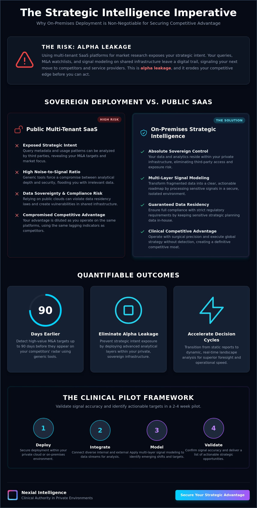

In high-stakes strategy, the medium is the message; your intelligence is only as valuable as the security of the environment where it resides. Relying on multi-tenant SaaS environments for market research introduces unacceptable data leakage risks. It's nearly impossible to maintain a clinical competitive advantage when your strategic queries and signal modeling exist on shared infrastructure, potentially exposing your intent to the very market you're trying to outmaneuver.
Key Takeaways
- Eliminate alpha leakage by deploying advanced analytical layers within your private infrastructure.
- Master the transition from static sector mapping to dynamic landscape analysis using multi-layer signal modeling.
- Reclaim sovereign control over sensitive data without compromising operational speed.
- Implement a clinical 2-4 week strategic intelligence pilot to validate signal accuracy and identify M&A targets.
- Secure a clinical competitive advantage by detecting high-value targets up to 90 days before competitors.
The Security Imperative: Why On-Premises Strategic Intelligence is Non-Negotiable
Global strategy demands more than just superior data; it requires a secure environment where that data can be processed without external observation. In high-stakes corporate environments, intelligence becomes a liability if it resides on public servers. True on-premises strategic intelligence is the deployment of advanced analytical layers directly within your organization's private infrastructure, ensuring that your strategic intent remains invisible to the market.
The 'Alpha Leakage' Phenomenon
Relying on public multi-tenant SaaS platforms creates 'Alpha Leakage'. When you perform detailed Sector Mapping or Landscape Analysis on shared cloud infrastructure, you're leaving a digital trail. Even with standard encryption, the metadata generated by your queries can signal your strategic direction to service providers or sophisticated competitors.
Sovereign Data Control as a Competitive Moat
Owning the infrastructure of your intelligence layer prevents external observability. When you utilize Private Cloud or On-Premises Deployment, you eliminate third-party data access risks entirely. This level of control allows for the modeling of highly sensitive signals that you wouldn't dare input into a public system. The ability to operate in an isolated environment creates a definitive moat around your decision-making process.
Multi-Layer Signal Modeling: The Engine of Modern Intelligence
Raw data is a liability until it's refined into foresight. Multi-layer signal modeling serves as the analytical engine that transforms fragmented market inputs into a cohesive strategic roadmap. Unlike traditional research that relies on lagging indicators, this methodology synthesizes diverse data streams, including financial shifts, patent filings, executive sentiment, and stealth startup activity.
Detecting Stealth Startup and M&A Signals
Identifying high-value acquisition targets before they reach public consciousness requires the detection of 'stealth' movements. These leave non-obvious digital footprints, such as localized hiring surges or specific domain registration patterns. Multi-layer signal modeling synthesizes these disparate traces to identify potential M&A targets up to 90 days earlier than traditional methods.

Implementing the Strategic Intelligence Pilot: A Clinical Framework
Traditional strategic planning often suffers from excessive latency. We propose a more agile approach. A 2-4 week strategic intelligence pilot offers a low-friction method to validate advanced analytical layers without committing to a full infrastructure overhaul immediately. This phase serves as a rigorous proof of concept, demonstrating the efficacy of on-premises strategic intelligence in a controlled environment.
- Step 1: Defining the Strategic Perimeter. Isolating a high-stakes 'test sector' where the need for clarity is most urgent.
- Step 2: Rapid Landscape Synthesis. Within 14 days, the engine generates a comprehensive, multi-layer sector map.
- Signal Accuracy: Verification of detected trends against ground truth.
Nexial Intelligence: Clinical Authority in Private Environments
Nexial Intelligence positions itself as the elite partner for organizations that demand surgical precision in their global strategy. We provide the infrastructure necessary to merge sophisticated multi-layer signal modeling with the clinical isolation of on-premises deployment. This synthesis ensures that your most sensitive efforts are never exposed to the risks of public cloud metadata leakage.